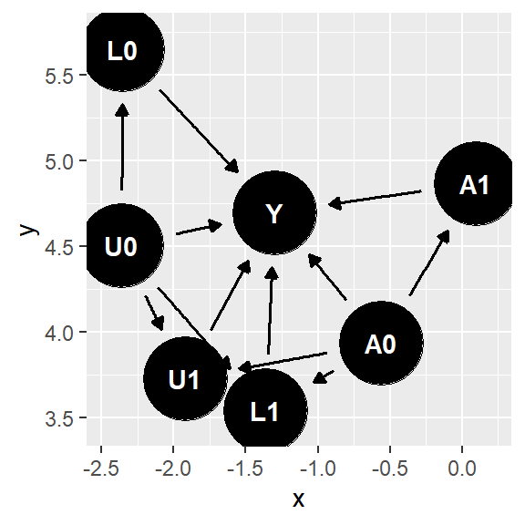

Causal Inference
To-Do
Future review
d-separation rules
Fix: Sequential exchangeability - static vs. dynamic (take technical point 19.3 and pg257)
P256-257, technical point 19.3 vs. dynamic 1, why (Y,L)\perp A vs. Y\perp A? Why one includes L in a joint format while the other doesn’t for exchangeability under dynamic strategy?
S&D3, why \(A\leftarrow L \rightarrow Y\) would make SWIG to not hold conditional exchangeability? Same for D2 - check d-separation
Skim read headers of Ch20 - 22 sections, set expectations and write down ideas
Decide a temporal switch to network x causal
Library
Resource
Study Notes
Causal Inference in Complex Systems with Network Interference and Temporal Dynamics
Resource:
Introduction
SUTVA - unit i’s outcome don’t affect j’s
Network intference - study Total Treatment Effect / Global Average Treatment Effect (GATE) - all treated - no one treated
Exposure Mapping - ?
Network Interference Challenge - TTE biased
Interference
Temporal Interference - interference path can be represented as a sequential line graph, from t-1 to t, t to t+1 etc.
Markovian Interference - temporal dependence + states
- \(Y_t\) is a function of the state \(X_t\), affected by treatment \(Z_t\) and state \(X_{t-1}\)

Spatio-temporal Interference
Estimate potential outcome of Z’ from Z - model (with strong assumption) vs. experimentation (to mitigate assumptions)
Design of Experiment
Outline
Randomized Design - distribution for assigning treatment/control
Choose treatment assignments by a known randomization rule (possibly graph-aware) and estimate effects using that randomization.
Trust the design, not a model - validity comes from \(P(Z)\), treating outcomes as fixed under the design.
Cluster-based randomized designs that exploit graph structure
Use application specific structure to reduce bias via experimental design
Model based Estimator - method to process data collected from experiment
Specify a probabilistic outcome + network dependence/interference model and design/estimate under that model (likelihood/Bayes).
Trust the model - learn effects by fitting a structured data-generating process.
Use regression to exploit structure in the potential outcomes model
Use application specific structure to construct estimator
Experiments over time - richer measurements, complex dynamics
Model-assisted randomized
Use a model to pick a good randomization scheme, but do inference with design-based guarantees.
Model for planning, randomization for credibility.
Example
Scenario:
You’re launching a new “AI summarization” feature in an app. Users are connected by a follow/friend graph.
Outcome: Y - weekly retention
Interference: ’if my friends get the feature, they talk about it / share clips → affects me.
Randomized Network Design
Goal: credible ATE/spillover claims with minimal modeling assumptions.
Implementation: Graph-cluster randomization- Partition the user graph into clusters (e.g., via METIS / spectral partition) to minimize edges across clusters. Then, randomize clusters to treatment/control (or randomize cluster “saturation” rates).
When you don’t know (or don’t trust) the network spillover mechanism, you randomize using a credible rule (often with clustering/restrictions) and let the known assignment probabilities—not a model—carry the causal validity.
Source of noise: Assignment itself - treat potential outcomes as fixed facts, and the random pull was the source of noise - “we happened to treat a weird subset this time.”
Model-based Network Design
Goal: maximum efficiency + mechanism (but you must be right-ish about the mwell, odel).
Implementation: Assume a spillover model, e.g. linear-in-means. Design treatment assignment strategy such that optimize some goal e.g. choose Z to maximize information or minimize estimation error etc.
When you’re willing to assume a specific interference/spillover model (or distributional structure), you fit that model to estimate the treatment effect more efficiently—at the cost of being wrong if the model is wrong.
Source of noise: outcome-generating randomness \(\epsilon\) of \(Y=a+\beta Z + \epsilon\), so model estimates the both outcomes (treated/control) - “even for the same treatment, outcomes are noisy draws from a probabilistic world (plus model misspecification risk).”
Model-assisted Randomized Design
Goal: keep design-based credibility, but use a model to avoid dumb randomizations.
Implementation: Use a model/simulation only to choose the randomization scheme (Pick the design that minimizes predicted variance / improves exposure balance), Run the chosen randomized design (still a known \(P(Z)\)), Analyze design-based (HT/IPW + randomization inference), optionally add regression adjustment for variance reduction.
When you know enough structure to plan smart randomization (clusters/saturation/restrictions) but don’t want to bet inference on the model, you use the model for design and randomization for validity.
Difference with #1: Does your choice of randomization depend on a predictive/working model of outcomes/interference (for efficiency) - #3, or is the model only used to define the estimand/exposure and the inference stays valid without it? - #1
Source of noise: For inference, the noise is still the randomization/sampling mechanism like randomization-based. But, the model adds a planning layer, not an inference layer: It’s used to choose a design that will likely have lower variance / better exposure balance. If the model is wrong, what changes is efficiency/power, not the validity of the uncertainty calculation—as long as you still know/track the true assignment probabilities.
Horvitz-Thompson Estimator
\(\hat{\tau}=\frac{1}{N}\sum^N_{i=1}Y_i\left\{ \frac{Z_i}{P(Z_i=1)} - \frac{1-Z_i}{P(Z_i=0)} \right\}\)
A general unequal-probability sampling estimator, not just for experiment
For the average treatment effect \(\tau = \frac{1}{N}\sum^N_{i=1}Y_i(1) - Y_i(0)\)
Probability denominator - IPTW, so blow up when P of either are so small / unbalanced
- Show this by upperbound

Partial Interference
Partial interference is the assumption that interference exists, but only within pre-defined groups, and does not cross groups; Units can affect each other’s outcomes inside the same cluster/block, but units in different clusters don’t affect each other. Achieve low variance for HT-estimator
Literature consider - varying treatment fraction to estimate finer estimands beyond TTE; consider observational data
Cluster Randomized Design
3-net clustering for restricted-growth graphs - achieve low variance
Computationally heavy to implement designs & probabilities
Construct clusters with probability of \(1/d^2\) (degree) for all its neighbors to be in the same cluster, so as sample size increase, as does the number of clusters
Give treatment at cluster-unit
Spatial Interference ############## continue next, 2026/02/08
Model-based Interference
Confounding due to Network Interference
Network can introduce confounding (additional path from unobserved confounder)
Nodes with more degree = high chance of the nodes are treated = more path for confounder
Linear-in-Mean Models - relies on \(\phi\) to be correct function

Neighborhood Interference
- Potential outcome is only a function of neighborhood treatment
Low Order Interactions
- if network effects are additive across subcommunities, then degree would be at most size of largest subcommunity
Heterogeneous Additive Network Effects
Pseudoinverse Estimator
Experiments across Time
- Staggered Rollout Bernoulli Design + TTE
Design and Analysis of Switchback Experiments
Cluster RD on a line graph
Markovian Dynamics + Geometric Mixing
Paper to Read
Christina Lee Yu, Edo Airoldi, Christian Borgs, and Jennifer Chayes. “Estimating Total Treatment Effect in Randomized Experiments with Unknown Network Structure”. PNAS, 2022.
Mayleen Cortez-Rodriguez, Matthew Eichhorn, Christina Lee Yu. “Staggered Rollout Designs Enable Causal Inference Under Interference Without Network Knowledge.” Neurips, 2022.
Anish Agarwal, Sarah H. Cen, Devavrat Shah, Christina Lee Yu. “Network Synthetic Interventions: A Causal Framework for Panel Data Under Network Interference.” Arxiv:2210.11355, 2024.
Iavor Bojinov, David Simchi-Levi, Jinglong Zhao. “Design and Analysis of Switchback Experiments”. Management Science, 2022
Yuchen Hu, Stefan Wager - “Switchback Experiments under Geometric Mixing”
Su Jia, Nathan Kallus, Christina Lee Yu. “Clustered Switchback Experiments: Near-Optimal Rates Under Spatiotemporal Interference”
Thoughts
Time dimension as network graph, so dynamic network as fully graph?
- Markovian dynamics + geometric mixing?
Staggered roll out design?
Generalized graph design?
Edo - Christina Yu?
Causal Inference without Models
Basics/Notes
Difference between A and a
\(A\) : random variable. A very typical predictor (or column in a dataset) to an outcome \(Y\) to any model that can be considered without a causal framework. In a DAG framework with a measured covariate \(L\) and an outcome \(Y\), they coincide as conditional independence, not a causal semantics. However, when you declare the DAG “causal” and thus assume each node (variables) is generated by a structural equation, do-calculus now have meaning and override the equation for \(A\) and set \(A=a\) .
\(a\): has two meanings, and they coincide only under consistency assumption.
Factual value - the realized treatment value naturally happened to be that number i.e., just a value in a column \(A\) in observational study, \(P(Y|A=a, L)\)
Interventional value - the value you impose in a experimental world, \(E[Y^a],\quad P(Y|\text{do}(A=a))\)
Confounding
d-Separaration
aaa
Single-World Intervention Graphs (SWIG)
Potential outcome framework is not encapsulated in causal diagrams as-is. Single world intervention graphs (SWIG) unifies counterfactual and graphical approaches by explicitly including the counterfactual variables on the graph. The SWIG 1 shows that the equivalence of conditional exchangeability \(Y^a\perp A|L\) and the backdoor criterion (with all path blocked between \(Y^a\) and \(A\) after conditioning on \(L\)), whereas SWIG 2 also visually shows the exchangeability \(Y^a\perp A|L\) would NOT hold, and conditioning (blocking) on \(L\) would lead to a biased estimate.
DAG 1
SWIG 1
DAG 2
SWIG 2
Time-Varying Causal Inference
Time-Varying Treatment
Definition of Causal Effects on Time
Time-fixed Treatment: Only captures the average causal effect in a snapshot.
\[ E[Y^{a=1}] - E[Y^{a=0}] \]
Time-varying Treatment: A person can switch treatment over time, with a treatment history \(\bar{A} = (a_0, a_1,\dots,a_K)\) for \(0\leq k \leq K\). Suppose that \(Y\) is the outcome at the end of follow-up \(\bar{A}\), at time \(K+1\). We can no longer define the average causal effect of at a single time \(k\) only i.e., \(E[Y^{a_k=1}] - E[Y^{a_k=0}]\). We define average causal effect as a contrast between the counterfactual mean outcomes under two different series of treatment strategies \(\bar{A}\) and \(\bar{A}'\) at all time (0 to K) \(E[Y^{\bar{a}}] - E[Y^{\bar{a}'}]\). Thus, the definition of this ACE of a time-varying treatment is not uniquely defined.
Treatment Strategy
Treatment strategy \(g\) is a rule to assign treatment at each time \(k\) of follow-up. There are many possible treatment strategies that may or may not depend on the evolution of an individual’s treatment history or time-varying covariate(s) \(\bar{L}_k\). These could be considered (but not limited to) as the combination of the following two ideas:
Deterministic vs. Random Treatment Strategies
Deterministic Treatment Strategies: A rule that assign a particular value of treatment \(a_k\) (0 or 1) to each individual at each time.
Random Treatment Strategies: A rule that assign a probability of receiving a treatment value.
Statics vs. Dynamic Treatment Strategies
Static Treatment Strategies: A rule \(g = [g_0(\bar{a}_{-1}), \dots, g_0(\bar{a}_{K-1})]\) where \(g_k(\bar{a}_{k-1})\) depends on its past treatment history but does not depend on time-varying covariate(s) \(\bar{l}_k\). Examples:
“always treat”: \(\bar{a} = (1,1,\dots,1) = \bar{1}\)
“never treat”: \(\bar{a} = (0,0,\dots,0) = \bar{0}\)
Dynamic Treatment Strategies: A rule \(g = [g_0(\bar{a}_{-1}, l_{0}), \dots, g_0(\bar{a}_{K-1}, \bar{l}_{K})]\) where \(g_k(\bar{a}_{k-1}, \bar{l}_k)\) depends on both its past treatment history and time-varying covariate(s) \(\bar{l}_k\) at each time \(k\).
- Dynamic treatment strategy can also be denoted as a recursion of its past \(g\) , a dynamic strategy \(g' = [g'_0(\bar{l}_0),\dots,g'_K(\bar{l}_K)]\), where \(g'_k(\bar{l}_k) = g_{k}(g'_{k}(\bar{l}_{k-1}), \bar{l}_{k})\) with \(g'_0(\bar{l}_{0}) = g_{0}(a'_{-1}=0,\bar{l}_{0})\). This definition of \(g'\) guarantees that an individual has followed strategy \(g\) through time \(t\) in observed data i.e., \(A_{k} = g_k (\bar{A}_{k-1}, \bar{L}_k)\) for \(k\leq t\), if and only if the individual has followed strategy \(g'\) through time \(t\) in observed data i.e., \(A_{k} = g_k' (\bar{L}_k)\) for \(k\leq t\).
Optimal Treatment Strategy
A strategy \(g\) maximizes the mean counterfactual outcome \(E[Y^g]\) (in a positive direction) is referred as optimal treatment strategy. In practice, optimal treatment strategies are almost always dynamic (e.g., discontinue drug testing by poison-level, spread marketing on seasonal peak) and often be preferred over random strategy (optimization vs. randomization). However, random strategy (randomized trial) is scientifically important to identify which deterministic strategy is optimal.
Sequentially Randomized Experiment
An experiment in which treatment assignment \(A_k\) is random at each time \(k\) to each individual is referred to as sequentially randomized experiment (SRE). It can be represented by a causal diagram at time points \(k = 0, 1, \dots, K\) and with no direct arrows from unmeasured prognostic factors / covariate(s) \(U\) into treatment \(A_k\) at any time \(k\).
Key Point: Assuming that a treatment assignment \(A_k\) at each time \(k\) depends on its past treatment history by default
Case 1: A treatment assignment \(A _k\) with NO dependence on unmeasured covariate(s) \(\bar{U}_k\) and measured covariate(s) \(\bar{L}_k\) \(\Rightarrow\) SRE
- Static treatment strategy under this scenario yields the counterfactual outcome mean equal to the mean outcome \(E[Y^{\bar{a}}] = E[Y|\bar{A}={\bar{a}}]\). This is not true for dynamic treatment strategy \(g\), and the estimation of \(E[Y^g]\) would require the application of g-methods.
- Case 2: A treatment assignment \(A _k\) with NO dependence on unmeasured covariate(s) \(\bar{U}_k\) BUT with dependence on measured covariate(s) \(\bar{L}_k\) \(\Rightarrow\) SRE
- Case 3: A treatment assignment \(A _k\) with dependence on unmeasured covariate(s) \(\bar{U}_k\) \(\Rightarrow\) not SRE, one cannot correctly assign treatment randomly with a guarantee
Observational Study
For observational study, Case 2 and Case 3 are the most typical scenarios given the nature of decisions about treatment assignment \(A_k\) often being determined by prognostic factors. However, it is impossible to determine weather it is Case 2 or Case 3.
For Case 2, the main difference against SRE is that the assignment probabilities are unknown but estimable from data.
Sequential Identifiability - Exchangeability, Positivity, and Consistency
Under the three identifiability conditions - exchangeability, positivity, and consistency - we can identify the mean counterfactual outcome \(E[Y^g]\) under a strategy of interest \(g\) as long as we use methods that approproately adjust for treatment and covariate history \((\bar{A}_{k-1}, \bar{L}_{k})\) such as g-formula, IPW, g-estimation (next chapter). All three conditions need to be generalized from the fixed version to the sequential version, including both static and dynamic strategies.
Sequential Exchangeability
For any strategy \(g\), treated and untreated at each time \(k\) are exchangeable for \(Y^g\) conditional on prior covariate history \(\bar{L}_k\) and any observed treatment history \(\bar{A}_{k-1} = g(\bar{A}_{k-2}, \bar{L}_{k-1})\) compatible with \(g\). One formal definition:
\[ Y^g \perp A_k|\bar{A}_{k-1} = g(\bar{A}_{k-2}, \bar{L}_{k-1}), \bar{L}_{k} \text{ for all strategies } g \text{ and } k = 1,2,\dots,K \]
This form of sequential exchangeability for \(Y^g\) always hold for cases (such as Case 2) with no unmeasured covariate(s) \(\bar {U}_k\)affecting the treatment and measured covariate history \((\bar{A}_{k-1}, \bar{L}_{k})\). Thus, sequential exchangeability holds for sequential randomized experiment and observational study, and their mean of the counterfactual outcome \(E[Y^g]\) under all strategies \(g\) is identified.
For cases other than Case 2, mean counterfactual outcome \(E[Y^g]\) under for some but not all strategies \(g\) is identifiable, even with a presense of additional unmeasured covariate(s) \(\bar{W}\). In the example Case 4 below with \(W_0\) not directly affecting the immediate treatment \(A_1\) to \(Y\), the mean counterfactual outcome \(E[Y^g]\) is identifiable with static strategy but not with dynamic strategy (will follow up on this later with SWIGs).
Sequential Positivity
In SRE, positivity holds if the randomization probabilities at each time \(k\) are never either 0 or 1, regardless of the past history \((\bar{A}_{k-1}, \bar{L}_{k})\). That is, as long as \(\bar{A}_{k-1} \not\perp \bar{L}_{k}\), then the treatment assignment probability for \(A_k\) at \(k\) is not 0.
\[ \text{If } f_{\bar{A}_{k-1}, \bar{L}_k}(\bar{a}_{k-1}, \bar{l}_k) \neq 0 \text{, then } f_{A_k|\bar{A}_{k-1}, \bar{L}_k}(\bar{a}_{k-1}, \bar{l}_k) > 0 \:\forall(\bar{a}_{k-1}, \bar{l}_k) \]
Sequential Consistency [NEED REVIEW]
We define sequential consistency with dependence to the past history.
\[\begin{align} Y^{\bar{a}} = Y^{\bar{a}^*} &\text{ if }\:\bar{a}=\bar{a}^*&& \cdots\text{outcome is identical under the same strategies}\\ Y = Y^{\bar{a}} &\text{ if }\:\bar{A}=\bar{a}&& \cdots\text{outcome is consistent under the same treatment history}\\ \bar{L}^{\bar{a}}_{k} = \bar{L}^{\bar{a}^*}_{k} &\text{ if }\: \bar{a}_{k-1}=\bar{a}_{k-1}^*&& \cdots\text{covariate history through k are identical under the same strategies}\\ \bar{L}_{k} = \bar{L}^{\bar{a}}_{k} &\text{ if }\: \bar{A}_{k-1}=\bar{a}_{k-1}&& \cdots\text{covariate history through k are consistent under the same treatment history} \end{align}\]
where \(\bar{L}^{\bar{a}}_{k}\) is the counterfactual L-history through time \(k\) under strategy \(\bar{a}\).
Single-World Intervention Graphs (SWIG) on Time-Varying Treatment; Various Form of Exchangeability
Similar to time-fixed cases, we can use SWIG to represent time-varying treatment. SWIGs include the counterfactual outcome, which means we can visually verify exchangeability using d-separation.
With SWIG, we can also verify that conditions for exchangeability to hold vary by 1. presence of various unmeasured covariate(s) 2. static strategy vs. dynamic strategy.
Case 1: Unmeasured covariate \(L_1\leftarrow U_1 \rightarrow Y\) - exchangeability holds for static strategy and dynamic strategy.
SWIG (static) 1: Two conditional independence hold: \(Y^{a_0, a_1}\perp A_0\) and \(Y^{a_0, a_1}\perp A_1|A_0=a_0, L_1\) for any static strategy \((a_0, a_1)\). More generally, below static sequential exchangeability hold. This is a weaker condition given that it only requires conditional independence between counterfactual outcome \(Y^{\bar{a}}\) under any static strategy \(g=\bar{a}\).
\[ Y^{\bar{a}}\perp A_k|\bar{A}_{k-1} = \bar{a}_{k-1}, \bar{L}_k\quad\text{for }k=1,\dots,K \]
As we consider multiple points \(k=0,\dots,K\), a stronger version of static sequential exchangeability includes \(\underline{L}^{\bar{a}}_{k+1}\), the counterfactual covariate history from time \(k+1\) through the end of follow-up. With consistency assumption, that would be:
\[ (Y^{\bar{a}}, \underline{L}^{\bar{a}}_{k+1})\perp A_k|\bar{A}_{k-1} = \bar{a}_{k-1}, \bar{L}_k\quad\text{for }k=1,\dots,K \]
Assume a version of below SWIG where there is an additional arrow from \(U_1\) to \(A^{a_0}_1\). With this case, no form of sequential exchangeability would hold.
SWIG (dynamic) 1: The SWIG includes a dotted arrow \(L^{g}_1 \rightarrow g_1(L^g_1)\), because we are assuming a counterfactual world associated with a dynamic strategy. Thus, we need to draw this arrow differently from others, even though we still treat is like other arrows when evaluating d-separation. Applying d-separation to this SWIG, two conditional independence hold: \(Y^{g}\perp A_0\) and \(Y^{g}\perp A_1|A_0=g_0, L_1\) for any dynamic strategy \(g\).
However as we consider multiple points \(k=0,\dots,K\), we need to include \(\underline{L}^, {\bar{a}}_{k+1}\)the counterfactual covariate history from time \(k+1\) through the end of follow-up as below.
\[ (Y^{g}, \underline{L}^{g}_{k+1})\perp A_k|\bar{A}_{k-1} = g(\bar{A}_{k-1}, \bar{L}_k), \bar{L}_k\quad\text{for }k=1,\dots,K\text{ and all } g \]
If positivity holds, this is sufficient to identify the outcome and covariate distribution under any static and dynamic strategies \(g\). For dynamic strategies, separate independence on \(Y^g\) and \(\underline{L}^{\bar{a}}_{k+1}\) does not hold [NEED DEEPER REVIEW WHY IN COMPARISON TO ABOVE STATEMENT].
Case 2: Unmeasured covariate \(A_0\leftarrow W_0 \rightarrow L1\) - exchangeability holds for static strategy but NOT dynamic strategy.
SWIG (static) 2: Even with an unmeasured covariate \(W_0\), two conditional exchangeabilities \(Y^{a_0, a_1}\perp A_0\) and \(Y^{a_0, a_1}\perp A_1|A_0=a_0, L_1\) for any static strategy \((a_0, a_1)\) still hold by applying d-separation.
SWIG (dynamic) 2: By applying d-separation, \(Y^g\perp A_0\) does not hold because of the open path \(A_0\leftarrow W_0\rightarrow L^g_1 \rightarrow g_1(L^g_1)\rightarrow Y^g\). Thus, sequential exchangeability for \(Y^g\) does not hold.
Case 3: Using d-separation, it shows that neither static sequential exchangeability \(Y^{\bar{a}}\) nor dynamic sequential exchangeability \(Y^g\) hold, because of open path \(A_0\leftarrow W_0 \rightarrow L_1 \rightarrow Y\), and thus, we cannot estimate causal effects in this scenario involving any strategies.
Full Sequential Exchangeability
A strong condition that is expected to hold in sequentially randomized experiment is
\[ (Y^{\bar{\mathcal{A}}}, \bar{L}^{\bar{\mathcal{A}}})\perp A_k|\bar{A}_{k-1}, \bar{L}_k \]
where, for a dichotomous treatment \(A_k\), \(\bar{\mathcal{A}}\) denotes the set of all \(2^K\) static strategies \(\bar{a}\), \(Y^{\bar{\mathcal{A}}}\) denotes the set of all counterfactual outcomes \(Y^{\bar{a}}\), and \(\bar{L}^{\bar{\mathcal{A}}}\) denotes the set of all counterfactual covariate histories. This joint independence condition is called full sequential exchangeability.
Time-Varying Confounders [Push this to later section]
For both time-fixed and time-varying cases, we need to rely on expert knowledge to design studies and measure as many relevant covariates \(\bar{L}_k\) to have more promising possibility of securing sequential exchangeability in observational studies. This is especially true when considering potential time-varying confounders that affect both treatment history \(\bar{A}\) and the outcome \(Y\) to not bias estimates on causal effects. While there is no way to empirically confirm that all confounders are measured, even in the case of correctly measuring and modeling all confounderes, most adjustments method may still result in biased estimates when comparing treatment strategies. Thus, g-methods are the appropriate approach to adjust for time-varying confounders.
Definition of Time-Varying Confounding
In the absence of selection bias, we say there is confounding for causal effects involving \(E[Y^{\bar{a}}]\) if \(E[Y^{\bar{a}}]\neq E[Y|A=\bar{a}]\) , meaning, consistency is not held, and all individuals in the study followed strategy \(\bar{a}\) differs from the mean outcome among the subset of individuals who followed strategy \(\bar{a}\) in the actual study. We say the confounding is solely time-fixed when, attributing to baseline covariates only, \(E[Y^{\bar{a}}|L_0] = E[Y|A=\bar{a}, L_0]\). If this does not hold i.e., \(E[Y^{\bar{a}}|L_0] \neq E[Y|A=\bar{a}, L_0]\), then we say that time-varying confounding is present. A sufficient condition for no time-varying confounding is unconditional sequential exchangeability \(Y^{\bar{a}}\perp A_k|\bar{A}_{k-1} = \bar{a}_{k-1}\) i.e., SWIG only involving \(A_0\), \(A_1\), and \(Y\).
CH20: Treatment-Confounder Feedback
Structure of treatment-confounder feedback in time-varying treatment setting, and why tradtional adjustments methods for confounding fails with its presence.
Effort: < 1 week
CH21: G-Methods for Time-Varying Treatments
Use of g-methods (g-formula, IPW, g-estimation, doubly-robust generalizations) to estimate causal effect of time-varying treatment under the presence of treatment-confounder feedback.
**This chapter is long, full of long equations. Be ready for a potential mash-up with the baseline method notations to save some time and space for note taking.
Effort: < 3 weeks
CH22: Target-Trial Emulation
Target Trial: Observational data can be viewed as an attempt to emulate a hypothetical randomized trial.
This chapter generalizes the concept of the target trial to sustained treatment strategies and outlines a unified framework for causal inference, regardless of whether the data arose from a randomized experiment or an observational study.
It also describes a taxonomy of causal effects that may be of interest when emulating a target trial, including observational analogs of intention-to-treat and per-protocol effects. If data are available on all important fixed and time-varying confounders, the effects of interest can now be validly estimated.
Effort: 1.5 week
CH23: Causal Mediation
Causal mediation: The study of the causal pathways through which the treatment affects the outcome; mediation analysis involves the treatment of interest and the mediator at different times, opening empirical verification of the causal estimates.
Effort: < 1 week